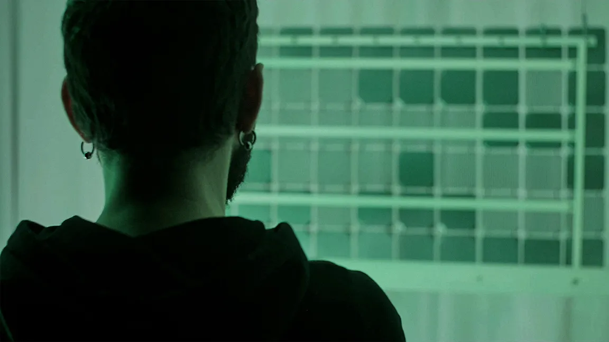
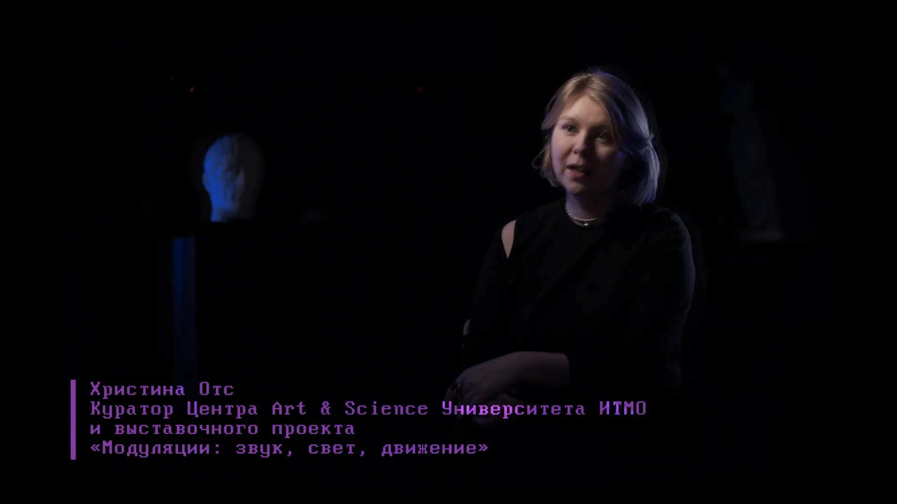
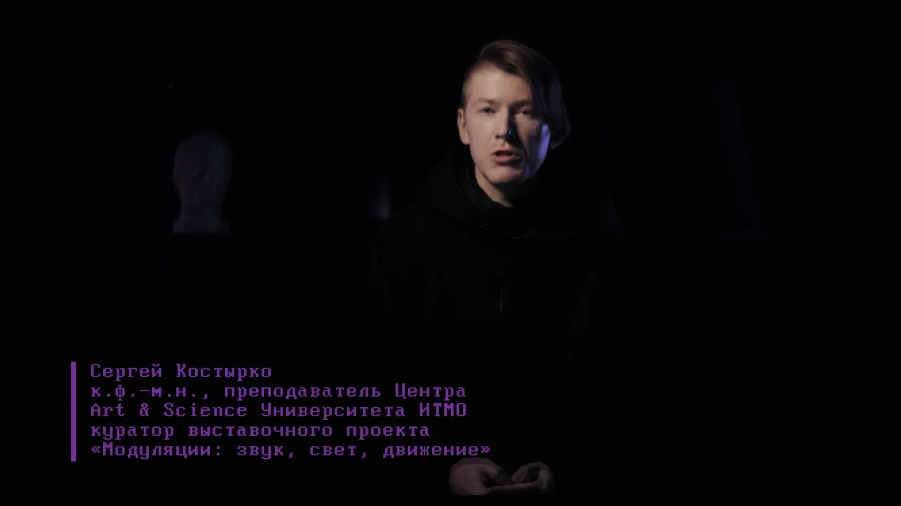

Мини-фильмы обart&science-художникахи их чувствах, которые привели их к созданию проектов, представленных на выставке"Модуляции: звук свет движение"
Совместный проектИТМО,МТС,СИСТЕМА и Русского Музея
Я на этом проекте:
Режиссёр-постановщик
Креативный продюсер
Режиссёр монтажа
Мини-фильмы представляющие художников и их проекты



Кураторы проекта от ИТМО

